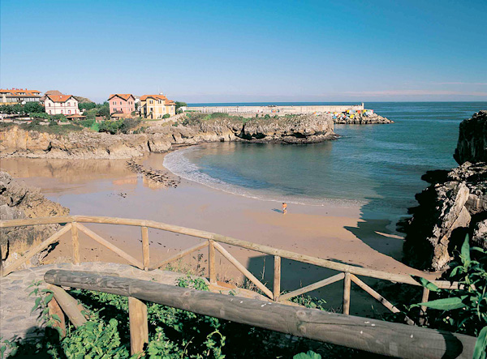
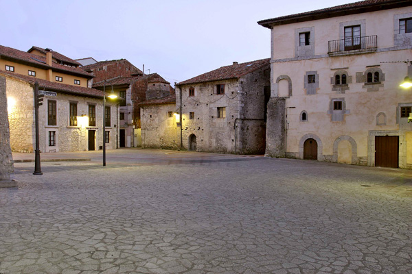
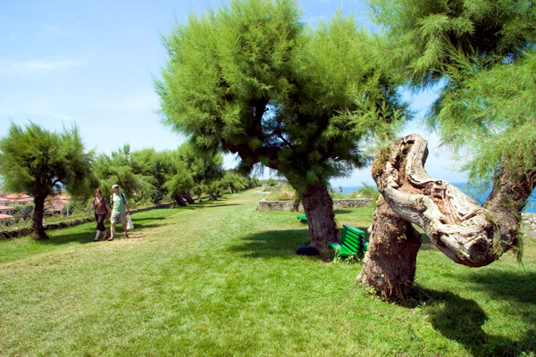

Llanes
Atrás-

El Sendero Azul de Llanes
-

Playa Bandera Azul de Toró
-

Playa de Puerto Chico
-

Faro
-

Centro Bandera Azul Aula del Mar
-

El Paseo Fluvial del Río Carrocedo
-

La Villa de Llanes
-
Puerto y Cubos de la Memoria
-

Playa Bandera Azul del Sablón
-

Paseo de San Pedro
-

LIC y ZEPA Ría de Ribadesella-Ría de Tinamayor